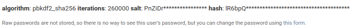

{% extends 'base.html' %}
{% load bootstrap4 %}

{% block content %}
	<div style="text-align:center; max-width:500px; margin:4rem auto;">
        <div class="mb-4">
            <h4>Sign Up</h4>
        </div>
        <form action="{% url 'accountapp:create' %}" method="post">
            {% csrf_token %}
            <!--{{ form }}--> <!--views.py의 AccountCreateview 클래스의 UserCreationForm을 그대로 불러온다.-->
            {% bootstrap_form form %}
            <input type="submit" class="btn btn-dark rounded-pill col-6 mt-3" value="가입하기">
        </form>
        <h8 style="color:gray;">password is to be stored using sha-256, there is no way to know raw password in spite of administrator.</h8>
        
    </div>
{% endblock %}

